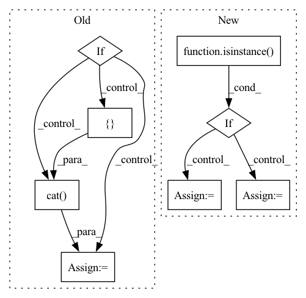

Pattern ID :24119
Before Change
embedded = (
self.basis(real) * self.cutoff(real)[:, None]
).view(real.shape[0], -1)
if not input_features is None:
embedded = self.linear(torch.cat([ embedded, input_features, dim=-1) )
is_per = input.attrs["real"][0]
data.attrs.update(
self.outputKeyMap(After Change
self.cutoff = cutoff(r_max, p=polynomial_degree)
def forward(self, data):
if isinstance( data, torch.Tensor) :
input = data
is_per = None
else:
input = self.inputKeyMap(data)
is_per = input.attrs["input"][0]In pattern: SUPERPATTERN
Frequency: 3
Non-data size: 8
Instances Fragment ID: 74834804
Project Name: 20171130/equivariant-nn-zoo
Commit Name: 5379a5a2de561cb346bef63294333e0bfaab68c8
Time: 2022-07-12
Author: hangruibi@outlook.com
File Name: e3_layers/nn/embedding.py
M Class Name: RadialBasisEncoding
N Class Name: RadialBasisEncoding
M Method Name: forward(2)
N Method Name: forward(2)
M Parent Class: Module
N Parent Class: Module
M File Name: e3_layers/nn/embedding.py
N File Name: e3_layers/nn/embedding.py
M Start Line: 243
M End Line: 260
N Start Line: 214
N End Line: 236
Before Change
do_classifier_free_guidance,
)
if do_classifier_free_guidance:
controlnet_conditioning_image = torch.cat([ controlnet_conditioning_image)
// 7. Prepare extra step kwargs. TODO: Logic should ideally just be moved out of the pipeline
extra_step_kwargs = self.prepare_extra_step_kwargs(generator, eta)
After Change
mask_image = prepare_mask_image(mask_image)
// condition image(s)
if isinstance( self.controlnet, ControlNetModel) :
controlnet_conditioning_image = prepare_controlnet_conditioning_image(
controlnet_conditioning_image=controlnet_conditioning_image,
width=width,
height=height,
batch_size=batch_size * num_images_per_prompt,
num_images_per_prompt=num_images_per_prompt,
device=device,
dtype=self.controlnet.dtype,
do_classifier_free_guidance=do_classifier_free_guidance,
)
elif isinstance(self.controlnet, MultiControlNetModel):
controlnet_conditioning_images = []
for image_ in controlnet_conditioning_image:
image_ = prepare_controlnet_conditioning_image(
controlnet_conditioning_image=image_,
width=width,
height=height,
batch_size=batch_size * num_images_per_prompt,
num_images_per_prompt=num_images_per_prompt,
device=device,
dtype=self.controlnet.dtype,
do_classifier_free_guidance=do_classifier_free_guidance,
)
controlnet_conditioning_images.append(image_)
controlnet_conditioning_image = controlnet_conditioning_images
else:
assert False
Fragment ID: 74834790
Project Name: huggingface/diffusers
Commit Name: 6290668254f421496c968e39d7de4e07e6bc394d
Time: 2023-04-28
Author: timegate@kaist.ac.kr
File Name: examples/community/stable_diffusion_controlnet_inpaint.py
M Class Name: StableDiffusionControlNetInpaintPipeline
N Class Name: StableDiffusionControlNetInpaintPipeline
M Method Name: __call__(22)
N Method Name: __call__(22)
M Parent Class: DiffusionPipeline
N Parent Class: DiffusionPipeline
M File Name: examples/community/stable_diffusion_controlnet_inpaint.py
N File Name: examples/community/stable_diffusion_controlnet_inpaint.py
M Start Line: 800
M End Line: 1017
N Start Line: 844
N End Line: 1079
Before Change
generator,
)
if do_classifier_free_guidance:
controlnet_conditioning_image = torch.cat([ controlnet_conditioning_image)
// 7. Prepare extra step kwargs. TODO: Logic should ideally just be moved out of the pipeline
extra_step_kwargs = self.prepare_extra_step_kwargs(generator, eta)
After Change
image = prepare_image(image)
// condition image(s)
if isinstance( self.controlnet, ControlNetModel) :
controlnet_conditioning_image = prepare_controlnet_conditioning_image(
controlnet_conditioning_image=controlnet_conditioning_image,
width=width,
height=height,
batch_size=batch_size * num_images_per_prompt,
num_images_per_prompt=num_images_per_prompt,
device=device,
dtype=self.controlnet.dtype,
do_classifier_free_guidance=do_classifier_free_guidance,
)
elif isinstance(self.controlnet, MultiControlNetModel):
controlnet_conditioning_images = []
for image_ in controlnet_conditioning_image:
image_ = prepare_controlnet_conditioning_image(
controlnet_conditioning_image=image_,
width=width,
height=height, Fragment ID: 74834782
Project Name: huggingface/diffusers
Commit Name: 1d033a95f62ccf2cdbb31795f69798ff1870241d
Time: 2023-03-30
Author: mikegarts@users.noreply.github.com
File Name: examples/community/stable_diffusion_controlnet_img2img.py
M Class Name: StableDiffusionControlNetImg2ImgPipeline
N Class Name: StableDiffusionControlNetImg2ImgPipeline
M Method Name: __call__(24)
N Method Name: __call__(24)
M Parent Class: DiffusionPipeline
N Parent Class: DiffusionPipeline
M File Name: examples/community/stable_diffusion_controlnet_img2img.py
N File Name: examples/community/stable_diffusion_controlnet_img2img.py
M Start Line: 662
M End Line: 872
N Start Line: 706
N End Line: 930